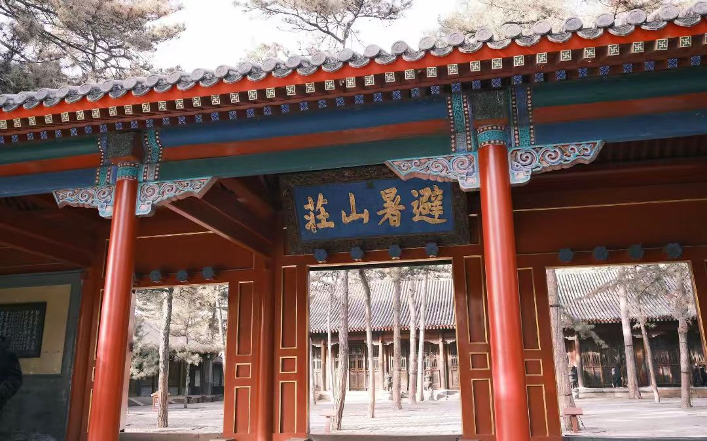

传奇：中国现存最大的皇家园林，面积564公顷，是颐和园的两倍。清代皇帝夏季避暑和处理政务的场所，被称为"第二政治中心"。集南北园林艺术之大成，融山水、建筑、草原、湖泊于一体，是中国古典园林艺术的巅峰之作。1994年被列入世界文化遗产。
核心景区：
游览攻略：
行程安排：D1：上午宫殿区+湖区，下午山区+平原区。D2：外八庙（普陀宗乘之庙+普宁寺）。
选址建园：康熙四十二年（1703年），康熙皇帝北巡时发现承德"草木茂，绝蚊蝎，泉水佳，人少疾"，决定在此修建行宫。最初仅为木兰秋狝（秋季围猎）途中的驻跸之所，后逐渐发展为规模宏大的离宫。
康熙时期：1703-1713年，完成第一期工程，包括宫殿区、湖区主要景点，康熙题名"避暑山庄"并题写三十六景。此时山庄已初具规模，成为皇帝夏季处理政务、接见蒙古王公的重要场所。
乾隆时期：乾隆皇帝对山庄进行了大规模扩建（1741-1792年），增加三十六景，使山庄达到鼎盛。同时修建外八庙，形成"众星拱月"的格局。乾隆曾在此接见六世班禅、马戛尔尼使团等，山庄成为清王朝的"第二政治中心"。
清代后期：嘉庆、道光皇帝仍常来避暑，但规模不再扩大。咸丰皇帝在此批准《北京条约》，并病逝于烟波致爽殿。同治以后，皇帝不再北巡，山庄逐渐荒废。
近代变迁：民国时期遭军阀破坏，文物大量流失。日军占领期间进一步破坏。新中国成立后，1961年被列为第一批全国重点文物保护单位，开始系统修缮。1994年与周围寺庙一起被列入世界文化遗产。
政治功能：避暑山庄不仅是皇家园林，更是清王朝处理民族事务、巩固边疆的重要政治场所。康熙、乾隆在此接见蒙古、西藏、回部等少数民族首领，通过木兰秋狝、赐宴赏赐、宗教活动等方式，加强民族团结，维护国家统一。
总体布局：避暑山庄的造园艺术可概括为"前宫后苑"、"南湖北山"。宫殿区位于南部，园林区位于北部，符合"天子南面而王"的传统观念。园林区又分湖区、平原区、山峦区三部分，形成层次丰富的空间序列。
造园思想：体现"天人合一"的哲学思想，追求"虽由人作，宛自天开"的艺术境界。康熙提出"宁拙舍巧，以朴素雅洁为贵"的造园原则，与圆明园、颐和园的富丽堂皇形成鲜明对比。
借景艺术：巧妙运用"借景"手法，将山庄外的磬锤峰、罗汉山、僧冠峰、双塔山等自然景观纳入园中视野，形成"山庄咫尺间，直作万里观"的宏大境界。康熙《避暑山庄记》写道："形势融结，蔚然深秀，称其地矣。"
水系设计：山庄有完整的水系，包括湖泊、溪流、泉瀑。热河泉是主要水源，冬季不冻，雾气蒸腾，形成"热河"奇观。水系设计模仿中国江河湖海的布局，寓意"普天之下，莫非王土"。
植物配置：原有古松数万株，形成"万壑松风"的壮丽景观。植物配置讲究四季变化：春有山花，夏有浓荫，秋有红叶，冬有雪松。同时引种各地名木，如金莲花、敖汉莲、五台松等。
象征意义：湖区象征江南水乡，平原区象征北方草原，山峦区象征西南山地，外八庙象征边疆民族，整个山庄是"天下一统"的微缩模型，体现了清王朝"合内外之心，成巩固之业"的政治理想。
澹泊敬诚殿：山庄正殿，俗称"楠木殿"，全部用金丝楠木建成，不施彩绘，保持本色，散发淡淡清香。是皇帝举行重大庆典、接见少数民族首领和外国使节的地方。建筑朴素庄重，体现"澹泊明志"的治国理念。
烟波致爽殿：皇帝寝宫，面阔七间，建筑高敞，室内布置精致而不奢华。康熙题名"烟波致爽"，列为三十六景第一。咸丰皇帝在此病逝，慈禧在此策划"辛酉政变"，是中国近代史的重要见证。
文津阁：皇家藏书楼，仿宁波天一阁而建，但规模更大。外观两层，实为三层，中间暗层用于藏书。阁前池水可防火，池中叠石形成月牙倒影，构思巧妙。曾收藏《四库全书》《古今图书集成》。
烟雨楼：仿嘉兴南湖烟雨楼而建，位于青莲岛上，是湖区标志性建筑。二层重檐，四面有廊，登楼可俯瞰湖区全景。每当细雨蒙蒙，烟雨迷离，最具江南韵味。
金山上帝阁：仿镇江金山寺而建，位于湖区制高点，三层六角，是湖区最佳观景点。登阁可远眺外八庙和磬锤峰，康熙、乾隆常在此赏景赋诗。
外八庙精华：①普陀宗乘之庙：仿布达拉宫，规模宏大，是外八庙之首。②普宁寺：汉藏结合，内有世界最大的木雕千手千眼观音像。③须弥福寿之庙：仿扎什伦布寺，为六世班禅而建。④普乐寺：坛城式布局，供奉上乐王佛。
文化价值：避暑山庄是中国古典园林艺术的集大成者，融合了南北园林风格，创造了"自然天成地就势，不待人力假虚设"的造园理念。其朴素淡雅的风格，与欧洲巴洛克园林、伊斯兰园林形成鲜明对比，代表东方园林的最高成就。
历史价值：见证了清王朝的兴衰，是清代"康乾盛世"的物质载体。在这里发生的政治决策、外交活动、民族交往，深刻影响了中国近代历史。是研究清代政治、军事、外交、民族、宗教、文化的重要实物资料。
艺术价值：建筑、园林、雕塑、绘画、书法、诗词完美结合。康熙、乾隆的御笔题额、楹联、诗文，提升了园林的文化品位。外八庙的造像、唐卡、壁画，是藏传佛教艺术的珍品。
科学价值：园林设计巧妙利用地形、水系、植被，创造了适宜的小气候，体现了古代生态智慧。建筑结构科学，楠木殿不用一颗铁钉，历经三百年不倒。文津阁的防火、防潮、防虫设计，至今仍有借鉴意义。
世界遗产评价：1994年，联合国教科文组织将避暑山庄及周围寺庙列入《世界遗产名录》，评价："它是由众多的宫殿以及其他处理政务、举行仪式的建筑构成的一个庞大的建筑群。建筑风格各异的庙宇和皇家园林同周围的湖泊、牧场和森林巧妙地融为一体。避暑山庄不仅具有极高的美学研究价值，而且还保留着中国封建社会发展末期的罕见的历史遗迹。"
保护与传承：作为世界文化遗产，避暑山庄的保护受到高度重视。遵循"修旧如旧"原则，已修复大部分建筑。同时开展学术研究、文化展示、旅游开发，让这一人类瑰宝焕发新的生机。每年举办"避暑山庄文化节"，传承和弘扬优秀传统文化。